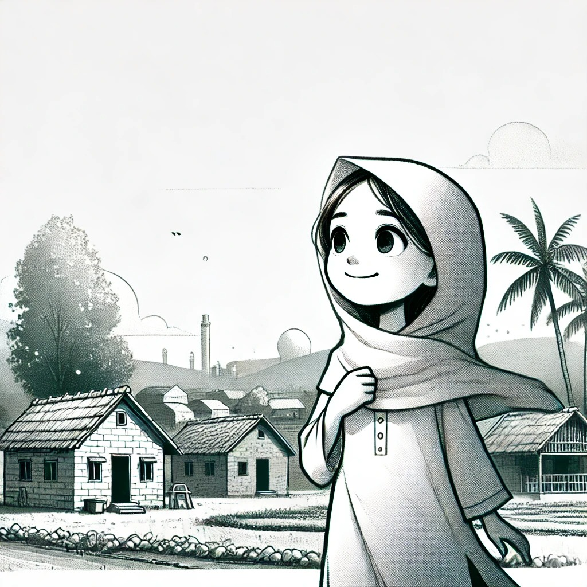

Introduction
Aisha,a curious and kind-hearted girl,lives in a small village with her family. She dreams of becoming a doctor to help her community, but her family struggles financially.
(1)The Challenge
Aisha's family cannot afford her school fees, and she fears her dream might slip away. Her father, a farmer, faces a poor harvest, deepening their financial crisis.
(2)The Determination
Despite the challenges, Aisha refuses to give up. She starts helping her mother sell handmade crafts and saves every penny she can.
(3)The Support
Aisha's teacher notices her dedication and offers her extra lessons for free.The villagers also come together,buying crafts and donating to support her education.
(4)The Setback

Just when things seem to be looking up,Aisha's father falls ill. The medical expenses consume the money she saved for school fees.
(5)The Despair
Aisha feels defeated and overwhelmed, questioning if her dreams are worth the struggles. Her friends and family console her, reminding her of her strength and resilience.
(6)The Inspiration
Aisha meets a local doctor who tells her about a scholarship program for underprivileged students.The doctor's words inspire her to apply, reigniting her hope.
(7)The Hard Work
Aisha works tirelessly on her scholarship application, balancing school,helping her family,and preparing for the exams.
(8)The Acceptance
Aisha receives the news that she has been accepted into the scholarship program.The village celebrates her achievement,proud of her perseverance.
(9)The New Beginning
Aisha moves to the city to attend a prestigious school.She faces new challenges, feeling out of place among wealthier students.
(10)The Adjustment
Aisha gradually adapts to her new environment, finding friends who appreciate her for her kindness and determination.
(11)The Achievement
Years pass, and Aisha graduates at the top of her class. She returns to her village as a qualified doctor, ready to give back to the community that supported her.
(12)The Impact

Aisha opens a small clinic in her village, offering free medical services to those in need. She becomes a symbol of hope and inspiration.
(13)The Gratitude
Aisha reflects on her journey, grateful for the support she received and the lessons learned. She realizes that the challenges made her stronger and more compassionate.
(14)Moral of the story

The story concludes with Aisha sharing her message: "No matter how tough life gets, never give up on your dreams. Hard work, resilience, and kindness can overcome any obstacle.
(15)